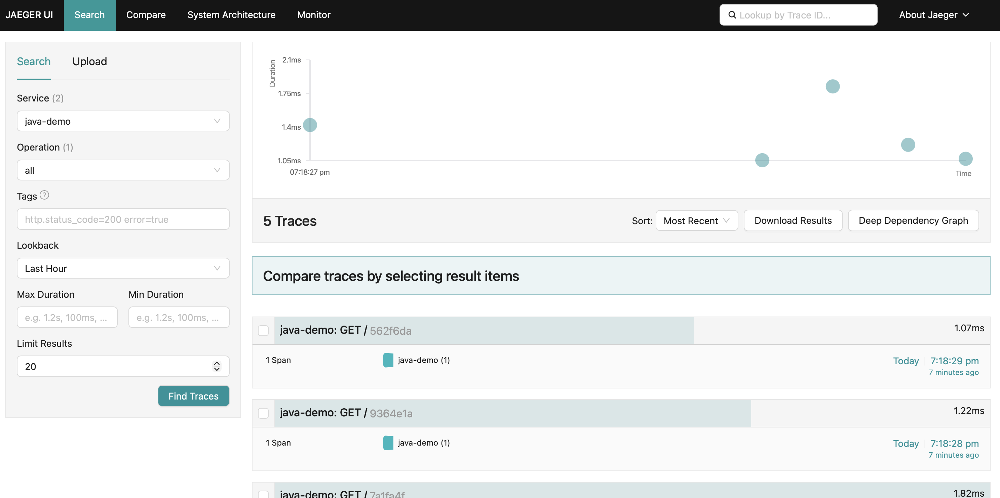
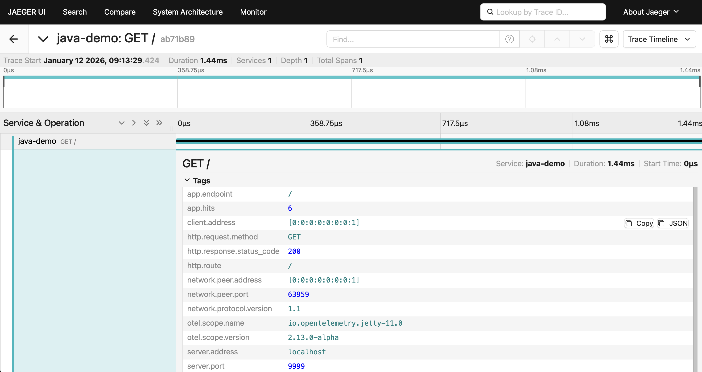
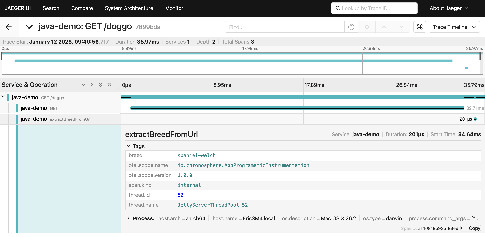
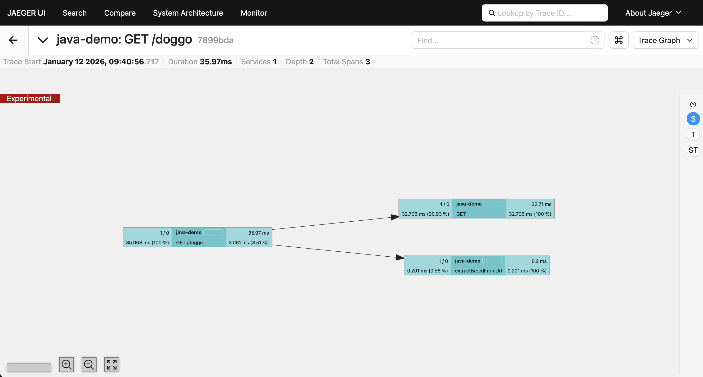
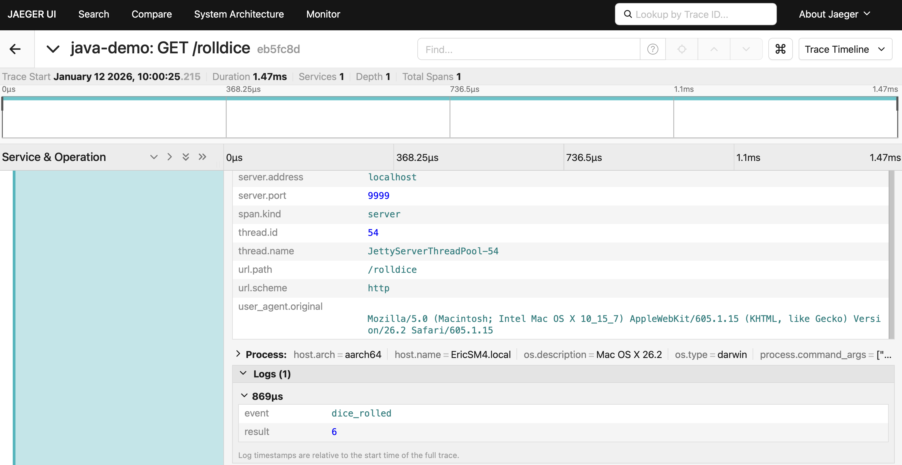
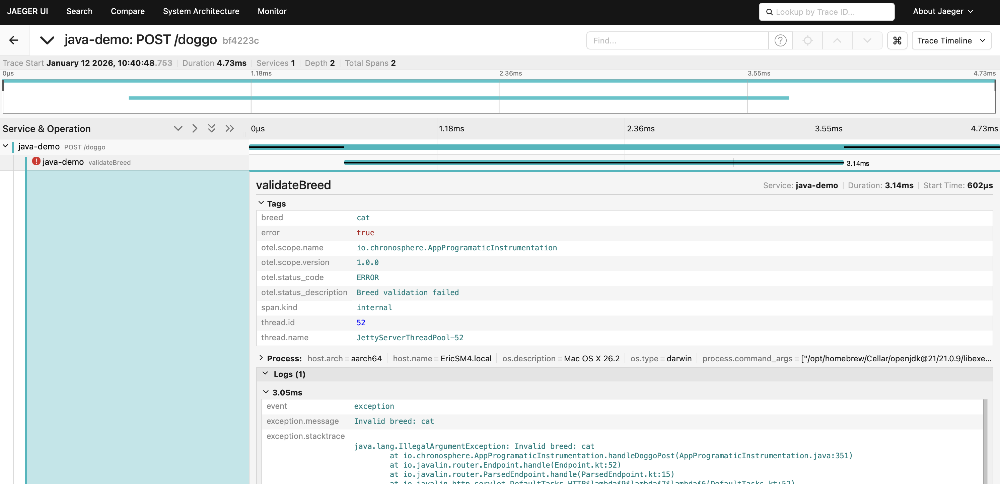

Manual - Rancher k3s prerequisites
On this path the application and Jaeger run together in a single pod on a local Rancher Desktop k3s
cluster. You need Podman v5+ to build the image,
Java 21 with
Maven 3.8+ to build the JAR, plus
Rancher Desktop with the Kubernetes (k3s)
engine enabled and
kubectl on your PATH.
Note: This lab binds host ports 9999 and 16686. If you still have the standalone
jaeger pod running from lab 3, delete it now with
kubectl delete pod jaeger - two pods cannot claim the same host port on a single
node.
Manual - Start Rancher Desktop
If Rancher Desktop is not already running from a previous lab, launch it now:
$ rdctl start
- In Preferences → Kubernetes, confirm "Enable Kubernetes" is checked (k3s)
- In Preferences → Container Engine, confirm "containerd" is selected
- Wait for the status indicator to turn green and show "Kubernetes is running"
Manual - Verifying the cluster
Check that
kubectl is pointed at Rancher Desktop and the node is ready:
$ kubectl config current-context
rancher-desktop
$ kubectl get nodes
NAME STATUS ROLES AGE VERSION
lima-rancher-desktop Ready control-plane,master 2d v1.36.2+k3s1
Now let's look at how the application and Jaeger are deployed together...
Manual - Review the pod definition
Open
k8s/manual-pod.yaml. The application and Jaeger are two containers in one
pod, so they share a network namespace. That is the whole trick: the Java Agent defaults to sending
OTLP to http://localhost:4318, which lands directly on Jaeger's OTLP receiver -
no endpoint configuration anywhere:
apiVersion: v1
kind: Pod
metadata:
name: java-demo-manual
spec:
containers:
- name: java-demo
image: localhost/java-demo:manual
imagePullPolicy: Never
ports:
- containerPort: 9999
- name: jaeger-all-in-one
image: jaegertracing/all-in-one:1.76.0
ports:
- containerPort: 16686
- containerPort: 4318
env:
- name: COLLECTOR_OTLP_ENABLED
value: "true"
The agent, the service name and
OTEL_TRACES_EXPORTER=otlp are all baked into
Buildfile-manual, so the pod spec stays this small.
Manual - Instrumentation by hand
Automatic and programmatic instrumentation gets you most of the way to tracing
system interactions, but being able to manually instrument and add metadata specific to your
application or business will allow you to derive better insights faster.
In this lab, we'll walk you through manually instrumenting a simple Java application using the OpenTelemetry Java API. Note that all existing programmatic instrumentation from Lab 3 should be completed before continuing with this manual instrumentation lab. Let's get started!
In this lab, we'll walk you through manually instrumenting a simple Java application using the OpenTelemetry Java API. Note that all existing programmatic instrumentation from Lab 3 should be completed before continuing with this manual instrumentation lab. Let's get started!
Manual - Adding Span Attributes
Attributes are key-value pairs that contain metadata to annotate a span with information
about the operation it is tracking. They help you filter, search, and analyze traces in
your observability backend:
- span.setAttribute("key", value):
- adds custom metadata to the current span
- enables filtering traces by business-specific values
- Supported value types:
- String, long, double, boolean
- Arrays of these types
Manual - Adding a Span Attribute
In the
handleIndex method, add an attribute tracking the count of homepage loads
(available for uncommenting in the AppProgramaticInstrumentation.java file, and
don't forget to uncomment the imports for this lab found at the top of the file):
import io.opentelemetry.api.trace.Span;
import io.javalin.http.Context;
private static void handleIndex(Context ctx) {
int hits = HITS.incrementAndGet();
// Get the current span created by the agent
Span span = Span.current();
// Add custom attributes to the span
span.setAttribute("app.hits", hits);
span.setAttribute("app.endpoint", "/");
ctx.contentType("text/plain");
ctx.result("This webpage has been viewed " + hits + " times");
}
Manual - Build and deploy on k3s
Rebuild the application, wrap it in an image, load it into the cluster and deploy it alongside Jaeger:
$ mvn clean install -f pom-programatic-instrumentation.xml
$ podman build -t java-demo:manual -f Buildfile-manual
$ podman save localhost/java-demo:manual -o java-demo-manual.tar
$ nerdctl --namespace k8s.io load -i java-demo-manual.tar
$ kubectl delete -f k8s/manual-pod.yaml --ignore-not-found
$ kubectl apply -f k8s/manual-pod.yaml
$ kubectl wait --for=condition=Ready pod/java-demo-manual --timeout=180s
$ kubectl port-forward pod/java-demo-manual 9999:9999 16686:16686
You repeat this same cycle after every code change in this lab. The
kubectl wait matters - without it port-forward fails with "unable to
forward port because pod is not running". Leave the forward running in its own terminal. Load
the index page http://localhost:9999 a few
times, then open the Jaeger UI at
http://localhost:16686 and search for traces
for the service java-demo.
Manual - Verifying Spans
After searching for traces for the service
java-demo you should see the
trace for the homepage load as shown below:

Manual - Verifying Span Attribute
Click on a trace and confirm the
app.hits attribute is in span details:

Manual - Creating nested spans
In the
AppProgramaticInstrumentation.java class, the /doggo endpoint
calls the Dog API and extracts the breed from the URL using the extractBreedFromUrl() method.
Let's create a nested span to trace this method:tracer.spanBuilder("name").startSpan()- creates a new span within the current trace context
Manual - Get the tracer
First, get a reference to the tracer. As we are using the
Java Agent,
we need to base our tracer on GlobalOpenTelemetry (available for
uncommenting in the AppProgramaticInstrumentation.java file):
import io.opentelemetry.api.GlobalOpenTelemetry;
import io.opentelemetry.api.trace.Tracer;
public class AppProgramaticInstrumentation {
private static final Tracer tracer = GlobalOpenTelemetry
.getTracer("io.chronosphere.AppProgramaticInstrumentation", "1.0.0");
// ...
}
Manual - Instrument nested span
Add a nested span to the
extractBreedFromUrl() method (available for
uncommenting in the AppProgramaticInstrumentation.java file):
private String extractBreedFromUrl(String imageUrl) {
Span span = tracer.spanBuilder("extractBreedFromUrl").startSpan();
try (Scope scope = span.makeCurrent()) {
Matcher matcher = BREED_PATTERN.matcher(imageUrl);
String breed = matcher.find() ? matcher.group(1) : "unknown";
span.setAttribute("breed", breed);
return breed;
} finally {
span.end();
}
}
Manual - Rebuild and redeploy
Run the same build-and-deploy cycle again to pick up the nested span:
$ mvn clean install -f pom-programatic-instrumentation.xml
$ podman build -t java-demo:manual -f Buildfile-manual
$ podman save localhost/java-demo:manual -o java-demo-manual.tar
$ nerdctl --namespace k8s.io load -i java-demo-manual.tar
$ kubectl delete -f k8s/manual-pod.yaml --ignore-not-found
$ kubectl apply -f k8s/manual-pod.yaml
$ kubectl wait --for=condition=Ready pod/java-demo-manual --timeout=180s
$ kubectl port-forward pod/java-demo-manual 9999:9999 16686:16686
Load the index page http://localhost:9999 a few times, then open the Jaeger UI at http://localhost:16686 and search for traces for the service
java-demo.
Manual - Verify nested span
Open the Jaeger UI and search for traces and search to list the collected traces. You should
see the
extractBreedFromUrl span nested under the parent request span if you
select one of the tracers and the breed attribute as shown below:

Manual - Visualizing a trace graph
Click on the menu in the upper right corner and select Trace Graph to see the relationship
between spans:

Manual - Adding span events
An event contains a structured log with a name, 1+ attributes, and a timestamp:
span.addEvent("name")- adds an event with just a namespan.addEvent("name", Attributes.of(...))- adds an event with attributes
Manual - Add span event
Add a span event to the
handleRollDice method to record the
results of the dice roll (available for uncommenting in the
AppProgramaticInstrumentation.java) file:
import io.opentelemetry.api.common.Attributes;
import io.javalin.http.Context;
private static void handleRollDice(Context ctx) {
int roll = RANDOM.nextInt(6) + 1;
Span span = Span.current();
span.addEvent("dice_rolled", Attributes.builder()
.put("result", (long) roll)
.build());
ctx.contentType("text/plain");
ctx.result(String.valueOf(roll));
}
Manual - Rebuild and redeploy
Same cycle once more, this time to pick up the span event:
$ mvn clean install -f pom-programatic-instrumentation.xml
$ podman build -t java-demo:manual -f Buildfile-manual
$ podman save localhost/java-demo:manual -o java-demo-manual.tar
$ nerdctl --namespace k8s.io load -i java-demo-manual.tar
$ kubectl delete -f k8s/manual-pod.yaml --ignore-not-found
$ kubectl apply -f k8s/manual-pod.yaml
$ kubectl wait --for=condition=Ready pod/java-demo-manual --timeout=180s
$ kubectl port-forward pod/java-demo-manual 9999:9999 16686:16686
Load the index page http://localhost:9999 a few times, then open the Jaeger UI at http://localhost:16686 and search for traces for the service
java-demo.
Manual - Verify span event
Open the Jaeger UI and search for traces and search to list the collected traces. You should
see the event
dice_rolled under the parent request span in the logs as shown
below:

Manual - Setting Span Status
A span status is used to identify spans that have not completed successfully. Spans can have
a status of: UNSET, OK, or ERROR.
span.setStatus(StatusCode.OK)span.setStatus(StatusCode.ERROR, "description")
Manual - Recording exceptions
When an exception occurs during tracing, we can record it on the span for debugging
using the code as follows:
import io.opentelemetry.api.trace.StatusCode;
try {
// Your code that might throw
processRequest();
} catch (Exception e) {
span.setStatus(StatusCode.ERROR, "Processing failed");
span.recordException(e);
throw e;
}
Manual - Validate breed with error handling
Let's add validation for the breed search with proper error handling in the method
handleDoggoPost as follows (available for
uncommenting in the AppProgramaticInstrumentation.java) file:
private static void handleDoggoPost(Context ctx) {
try {
String breed = ctx.formParam("breed-search");
String imageSrc;
String error = null;
if (breed == null || breed.isEmpty()) {
error = "No breed specified.";
imageSrc = null;
} else if (!Breeds.isValidBreed(breed)) {
Span span = tracer.spanBuilder("validateBreed").startSpan();
try (Scope scope = span.makeCurrent()) {
span.setAttribute("breed", breed);
span.setStatus(StatusCode.ERROR, "Breed validation failed");
span.recordException(new IllegalArgumentException("Invalid breed: " + breed));
} finally {
span.end();
}
error = "No breed found.";
imageSrc = null;
} else {
String apiUrl = "https://dog.ceo/api/breed/" + breed + "/images/random";
JsonObject json = fetchJson(apiUrl);
imageSrc = json.get("message").getAsString();
}
...
Manual - Rebuild and validate error handling
Same cycle a final time, to pick up the status and exception handling:
$ mvn clean install -f pom-programatic-instrumentation.xml
$ podman build -t java-demo:manual -f Buildfile-manual
$ podman save localhost/java-demo:manual -o java-demo-manual.tar
$ nerdctl --namespace k8s.io load -i java-demo-manual.tar
$ kubectl delete -f k8s/manual-pod.yaml --ignore-not-found
$ kubectl apply -f k8s/manual-pod.yaml
$ kubectl wait --for=condition=Ready pod/java-demo-manual --timeout=180s
$ kubectl port-forward pod/java-demo-manual 9999:9999 16686:16686
Load http://localhost:9999/doggo and
search for a valid breed like "doberman" or "Akita", then an invalid one like "woof" or "cat",
before opening the Jaeger UI at
http://localhost:16686.
Manual - Verify error status
In Jaeger, find a trace with an error. The span will be marked with an error icon and contain
the exception details as shown below in the tags and logs:

Intermezzo - Semantic Conventions
OpenTelemetry provides
semantic conventions
for attribute naming. Since semantic conventions v1.32 these constants live in per-domain
classes -
HttpAttributes, UrlAttributes and friends -
rather than in the single SemanticAttributes class used previously:
import io.opentelemetry.semconv.HttpAttributes;
import io.opentelemetry.semconv.UrlAttributes;
span.setAttribute(HttpAttributes.HTTP_REQUEST_METHOD, "GET");
span.setAttribute(HttpAttributes.HTTP_RESPONSE_STATUS_CODE, 200);
span.setAttribute(UrlAttributes.URL_PATH, "/doggo");
Manual - Clean up
The next lab runs its own pod on host ports 9999 and 9090, so tear this one down before
moving on. Stop the port-forward with CTRL-C and then:
$ kubectl delete -f k8s/manual-pod.yaml
$ kubectl get pods
No resources found in default namespace.
Lab completed - Results
We combined programmatic and manual instrumentation to enhance the visibility provided by traces - creating
nested spans, adding attributes, recording events and handling errors - with the application and
Jaeger running together as a single pod on a local Rancher k3s cluster.
Next up, linking distributed traces to application metrics!

Contact - are there any questions?
Eric D. Schabell
Technology Advocate Lead
Contact: @ericschabell {@fosstodon.org) or https://www.schabell.org
Technology Advocate Lead
Contact: @ericschabell {@fosstodon.org) or https://www.schabell.org